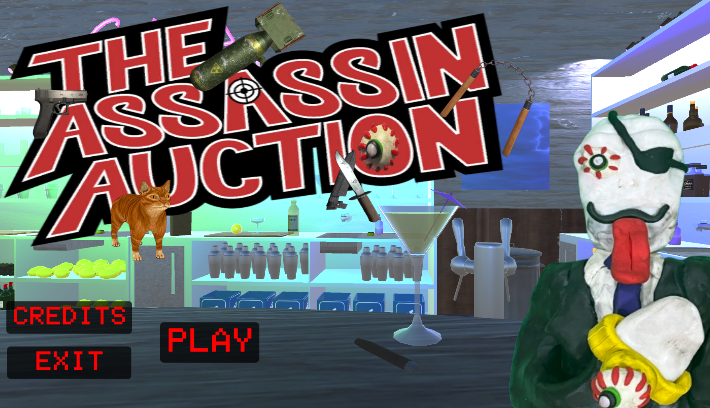

Unity • Strategy / Game of Chance
The Assassin Auction
Compete against the most feared hitman Fleece deFraud in a strategic auction where you bid for
weapons
of different tiers! Manage your money, take calculated risks, practice your shooting in bonus games,
and outsmart deFraud across an unpredictable series of bidding rounds.
Received an award for "Excellence in Design" at the Rutgers
Creation of Game Society's Spring 2025 Scarlet Showcase!

About the Project
Go head-to-head against Fleece deFraud, the assassin world's most devious, cutthroat, and most
importantly, obnoxious killer! You both will bid for a series of different types and tiers of weapons,
with the ultimate goal of being the bidder with the overall highest collection value of weapons.
However, beware that the game contains many factors out of your control: How high will Fleece bid? How
much should you bid on each item, which will be covered? Do you risk your purchase in a bonus game? Do
you trade in a weapon in hopes of replacing it with a stronger one? When will the auction end? Try your
luck with multiple unique playthroughs of deadly gambling in The Assassin Auction!
Content Notice: This game contains offensive language, loud noises and alcoholic references!
Team: Dylan Abry (Lead Designer and Developer), Srushti Basapuri (Artist)
Gameplay & Media
What I Built
- Randomized Bid Probability System: Dr. deFraud uses a probability-based bidding system that determines how aggressively he competes for each potion. Each round, his maximum bid is randomized based on the potion's starting value and his available funds, while the player receives a probability guide rather than knowing his exact limit. The system uses escalating bid thresholds with decreasing probabilities of continuing to bid, making deFraud increasingly cautious as prices rise. Because he knows when the auction will end, his behavior also changes strategically during the final round, where he is willing to spend all of his remaining money.
- Dr. deFraud Decision-Making AI: Dr. deFraud uses rule-based, state-dependent decision logic to evaluate his inventory and choose advantageous actions. His potion-mixing logic searches his available items for combinations and prioritizes the pairing that produces the strongest replica. His trade-in logic evaluates potion tier and monetary value, prioritizing the most valuable potion among his lowest-tier items. Because these decisions are calculated from his current inventory, deFraud's behavior can change dynamically from one playthrough to another.
- Dynamic Auction / Game-State System: Each auction lasts a randomized 10–15 rounds, with only a selection of the game's 30 potions appearing for bid during each playthrough. Throughout the auction, additional mechanics—including Dr. deFraud's two Pilfer Passes, surprise bonus games, potion mixing, and trade-ins—dynamically alter player inventories, available funds, and strategic opportunities. The combination of randomized content and interconnected game systems ensures that no two auctions play out exactly the same way.
- Randomized Bonus Game Systems: Bonus games use randomized game-state generation to prevent identical playthroughs. Fisher-Yates shuffling is used for shuffling cards in Matcher and puzzle pieces in Slider. Game-specific validation ensures that despite random shuffling and generation of objects, challenges remain beatable for the player.
- Potion Mixing & Inventory System: Each potion is represented by a custom C# class that stores properties such as its name and tier value. Potion recipes are managed through a Dictionary, where pairs of ingredient potions are mapped to their resulting potion replica. When the player or Dr. deFraud attempts to mix two potions, the system checks whether the selected combination matches a valid recipe and, if successful, awards a replica with a tier value one level higher than the combined ingredients. Player and opponent inventories are maintained using List collections that update dynamically throughout the auction. Purchasing, pilfering, trading in, and mixing potions can add, remove, or replace inventory data, allowing multiple gameplay systems to operate from the same continuously changing game state.
- Multi-Phase RPG Battle System: The game's finale transitions the player into a turn-based RPG boss battle against Dr. deFraud, who has 6,000 HP compared to the player's 600 HP. Each turn, the player can use potions with different offensive, healing, and defensive effects, while Dr. deFraud responds through his own attack phase. Defensive actions can reduce incoming damage and create opportunities to counterattack, while cooldowns and status effects influence the player's available strategies. The battle also incorporates the game's economy through opportunities to earn additional funds from quiz questions and purchase resources when needed. As Dr. deFraud approaches defeat, the battle progresses through additional states and phases, including the arrival of Fleece deFraud as a 4,000-HP secondary opponent. State-based logic controls transitions between combat, defensive phases, narrative sequences, and the final Destructionatron challenge, where the traditional turn-based battle is replaced by a timed input sequence that determines the game's final outcome.
- Persistent Progression & Completionist Cave: Player accomplishments are tracked beyond individual auction sessions through a persistent progression system that records completed challenges and unlocked content. These achievements contribute toward the Completionist Cave, a reward area containing additional interactive content and opportunities to revisit features from the main game. The Cave includes replayable bonus games, a functioning television (that plays animations made by me!), and additional activities such as One Percent Present and multiplayer chess, giving players incentives to explore and complete content beyond the primary auction.
- Rule-Based Chess System: The Completionist Cave features a fully playable chess minigame programmed around the rules and state of an active match. Each piece contains movement logic that determines its valid moves, while the game tracks board state and whose turn is currently active to prevent illegal actions. The system also handles special rule conditions including castling, pawn promotion, and en passant, requiring additional state tracking based on previous moves and the current positions of pieces. The system evaluates king safety to prevent illegal moves and determine check and checkmate conditions. A chess clock independently tracks each player's remaining time and switches between players as turns change, adding another state-dependent system that must remain synchronized with the match.
Technical Challenges
Discuss interesting development problems you encountered and how you solved them.